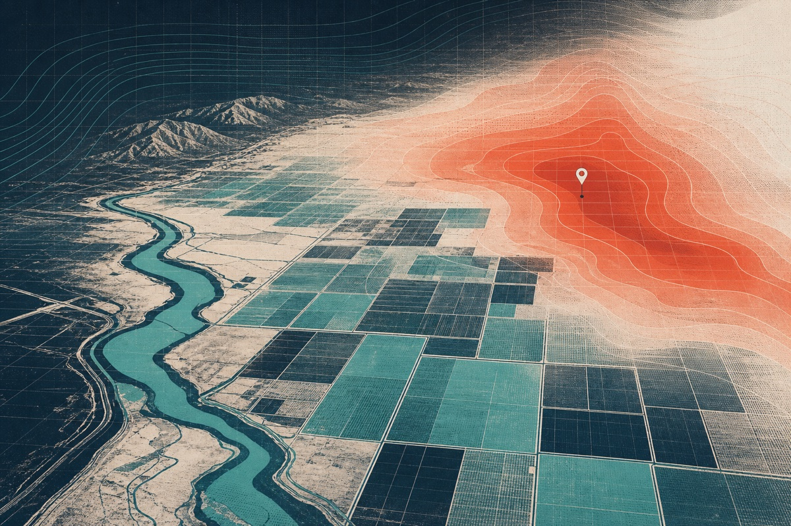
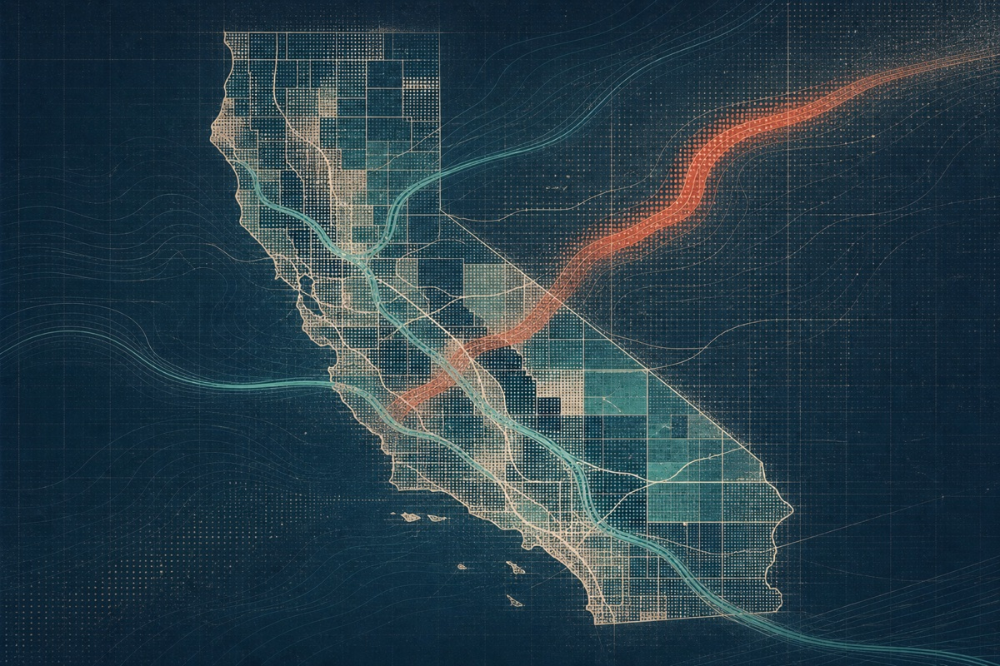
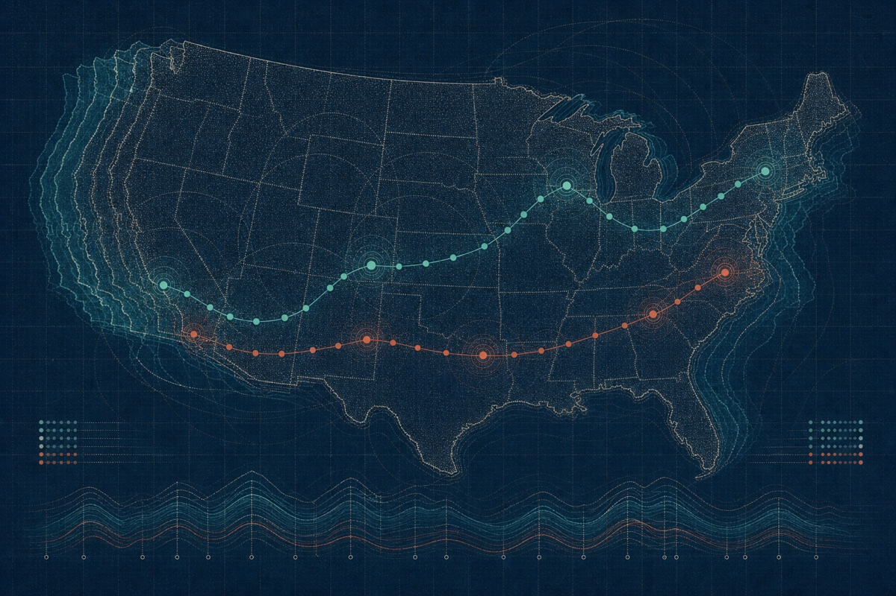

Mar 2026 — Present
Applied Value Engineer
Celonis
Analysing enterprise processes, quantifying operational value, and prototyping AI agents and automations on Celonis’ process intelligence platform.
- Process Intelligence
- AI Agents
- Value Engineering
Madrid, Spain
AI & Data Engineer
I build useful systems where data, machine learning and software meet.
My work starts with messy real-world data and ends with something people can understand, trust and use.
Process intelligence, applied AI and measurable enterprise value at Celonis.
01About
I’m an AI & Data Engineer from Granada, now based in Madrid. I work across the full path from raw data and modelling to APIs, interfaces and deployment.
My background in robotics taught me to think in systems. Research in climate informatics taught me to make those systems rigorous. Consulting keeps the result grounded in what people and organisations actually need.

02Experience
Mar 2026 — Present
Celonis
Analysing enterprise processes, quantifying operational value, and prototyping AI agents and automations on Celonis’ process intelligence platform.
May 2025 — Feb 2026
Premier Analytics Consulting
Building production data pipelines, FastAPI backends, containerised AI systems and multilingual assistants across cloud and on-premise environments.
Jun 2024 — Nov 2025
iHeatApp · SDSU Climate Informatics Lab
Developed hourly heat-risk forecasts, geospatial pipelines and a bilingual AI-assisted product for communities in California’s Imperial Valley.
Aug 2023 — May 2024
Center for Information Convergence and Strategy
Built reproducible R workflows for cleaning and analysing spatiotemporal nutrient data from Irish agricultural catchments.
03Projects
Four projects that best represent how I think and build.

A bilingual platform that turns hourly weather forecasts into local heat-risk maps and contextual guidance.
Real-time NOAA climate data, interactive maps and a vision assistant served from a Raspberry Pi.
Three million flight records, weather context and an honest comparison of seven model families.

Ten years of traffic, population and income combined in one geospatial analytical story.
04Projects
Eight more projects complete the record, from applied modelling to early interactive experiments.
Six regression approaches compared across 53,940 diamonds and transformed targets.
Relational database design, AWS deployment and analytical views for pharmacy operations.
Seasonal weekly sales forecasting for one store through a focused SARIMA comparison.
A multivariate study where weak predictive signal became the important methodological result.
A small interactive game for learning the drawing loop, events and collision logic.
A zoomable and searchable campus map with building-level information and imagery.
Recent news search, geocoded results and the geographic context behind each story.

Multivariate and multitemporal views of state crime rates and moving geographic centroids.
+Beyond the code
05Contact
Based in Madrid, Spain